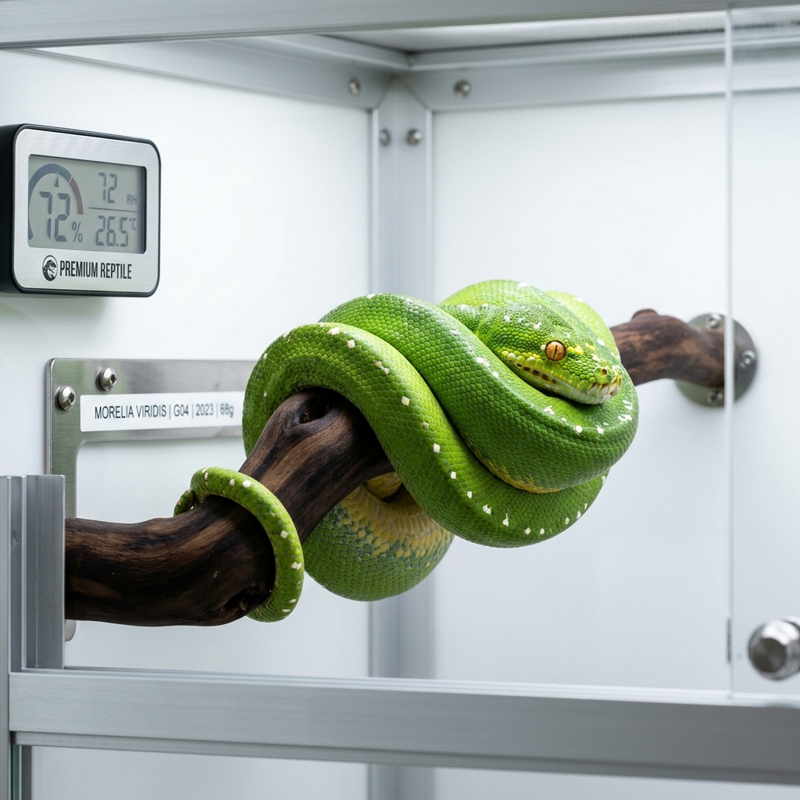
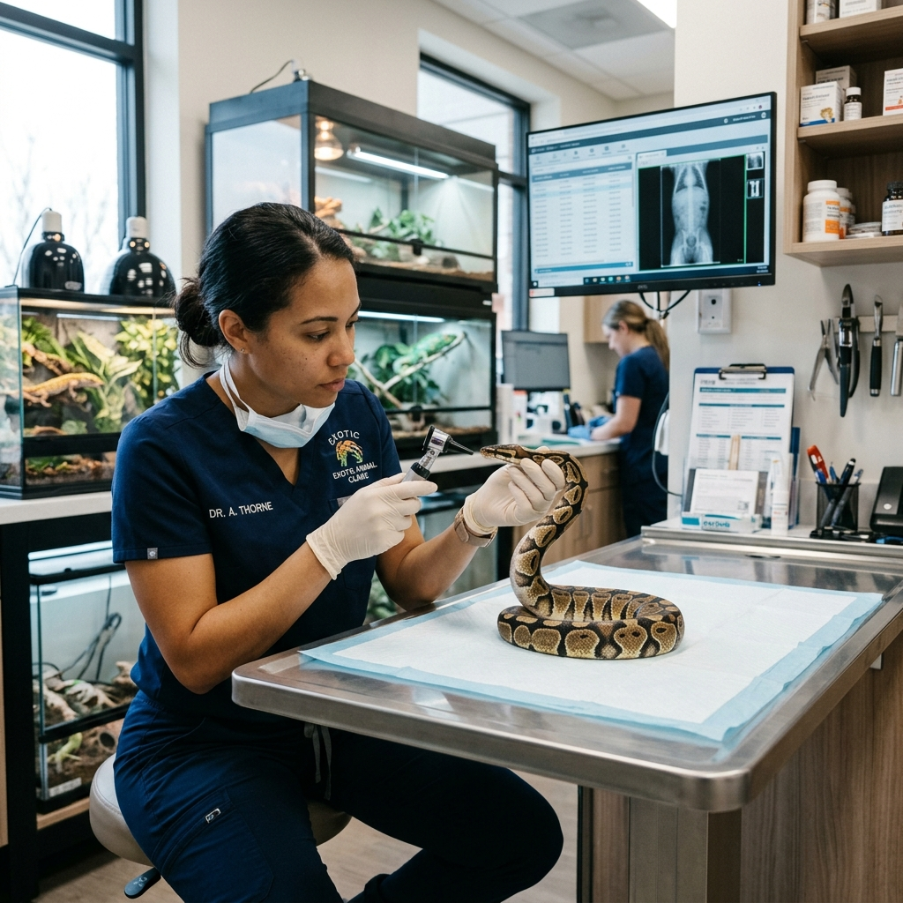
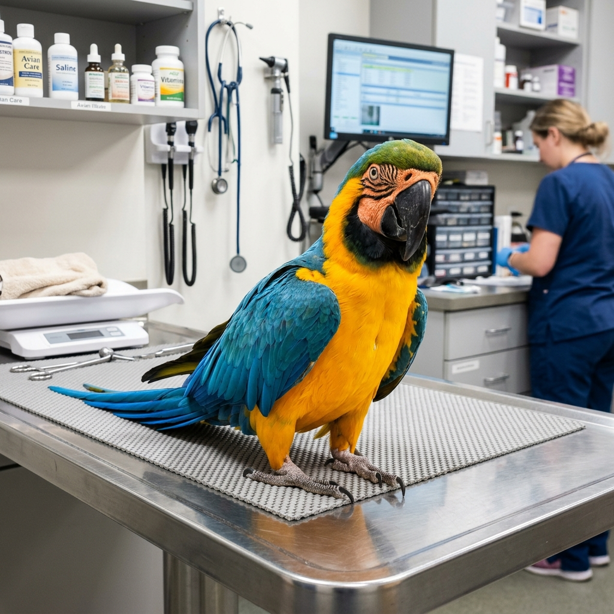

Advanced diagnostic and surgical interventions for complex reptilian cases.

Specialized handling and medical protocols for venomous and non-venomous constrictors, addressing respiratory and dermatological conditions.
Read More
Comprehensive care for metabolic bone disease, impactions, and shell fractures, utilizing advanced imaging techniques.
Read MoreDelicate and precise medical care for the intricate physiology of exotic birds.

Birds mask illness remarkably well. Our state-of-the-art diagnostic suite allows us to detect subtle biochemical changes before they become critical. We offer endoscopic sexing, advanced respiratory panels, and behavioral counseling for feather plucking.
Discover Avian ServicesTailored anesthetic and surgical approaches for uniquely challenging patients.
Expert nutritional planning and dental care for these highly specialized marsupials.
Advanced management of adrenal disease and insulinomas using the latest therapeutic protocols.
Specialized gastrointestinal stasis treatment and complex dental surgeries.
Over 80% of exotic pet illnesses stem from improper nutrition. Our board-certified nutritionists create species-specific dietary plans to ensure optimal health and longevity.
Exotic animals are exceptional at hiding illness. When they show symptoms, it is often a critical emergency. Our specialized intensive care unit is equipped with species-specific incubators, oxygen therapy, and advanced monitoring systems.